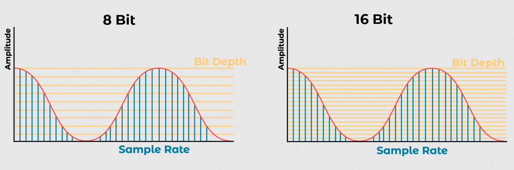
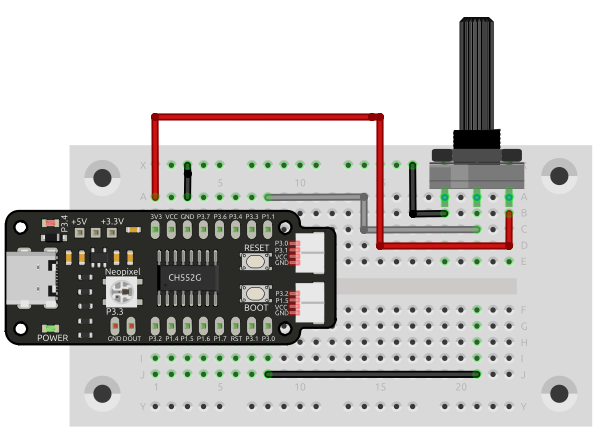

Conversión de Analógico a Digital#
Definición de ADC#
La conversión de analógico a digital (ADC) es un proceso que convierte señales analógicas en valores digitales. Los microcontroladores utilizan ADC para leer señales analógicas de sensores y otros dispositivos.
Advertencia
El voltaje de referencia del ADC varía según el microcontrolador. Consulta la hoja de datos del microcontrolador para obtener información específica.
Cuantificación y Codificación de Señales Analógicas#
Las señales analógicas son continuas y pueden tomar cualquier valor dentro de un rango dado. En cambio, las señales digitales son discretas y solo pueden adoptar valores específicos. La conversión de una señal analógica a digital implica dos pasos: cuantificación y codificación.
{kind=link}

Figura 13 Conversión de Analógico a Digital#
Resolución |
Niveles de Cuantificación |
Código Digital |
|---|---|---|
8 bits |
256 |
|
12 bits |
4,096 |
|
16 bits |
65,536 |
|
Cuantificación#
Divide la señal analógica en niveles discretos. El número de niveles determina la resolución del ADC.
Nota
La resolución de un ADC se mide en bits y se calcula como 2^n, donde n es el número de bits.
Resolución |
Niveles de Cuantificación |
Descripción |
|---|---|---|
8 bits |
256 |
Un ADC de 8 bits tiene 256 niveles de cuantificación, lo que significa que puede representar la señal analógica con 256 valores diferentes. |
12 bits |
4,096 |
Un ADC de 12 bits tiene 4,096 niveles de cuantificación, lo que permite representar la señal analógica con 4,096 valores distintos. |
16 bits |
65,536 |
Un ADC de 16 bits tiene 65,536 niveles de cuantificación, permitiendo representar la señal analógica con 65,536 valores distintos. |
Codificación#
Asigna un código digital a cada nivel de cuantificación. Este código digital representa el valor de la señal analógica en dicho nivel.
Arduino IDE y SDCC#
El ADC del microcontrolador CH552 tiene una resolución de 8 bits, lo que significa que puede representar valores entre 0 y 255. Para leer un valor analógico, se utiliza la función analogRead() en Arduino IDE o ADC_read() en SDCC.
Advertencia
Este ejemplo simplificado prescinde de la comunicación serial para mostrar el funcionamiento básico del ADC. En un entorno real, es recomendable utilizar la comunicación serial para enviar los datos leídos a una computadora o dispositivo externo.
#include "src/system.h"
#include "src/gpio.h"
#include "src/delay.h"
#define PIN_ADC P11
void main(void)
{
CLK_config();
DLY_ms(5);
ADC_input(PIN_ADC);
ADC_enable();
while (1)
{
int data = ADC_read(); // Leer valor ADC (0 - 255, 8 bits)
}
}
#define LED_BUILTIN 34
int sensorPin = 11;
int ledPin = LED_BUILTIN;
int sensorValue = 0;
void setup() {
pinMode(ledPin, OUTPUT);
pinMode(sensorPin, INPUT);
}
void loop() {
sensorValue = analogRead(sensorPin);
digitalWrite(ledPin, HIGH);
delay(sensorValue);
digitalWrite(ledPin, LOW);
delay(sensorValue);
}
Aplicaciones#
Lectura de potenciómetro salida serial, usa el firmware adc.bin para probar la lectura de un potenciómetro conectado al pin P11 del microcontrolador. El valor leído se envía a través de la salida serial.
{kind=link}

Figura 14 Lectura de potenciómetro salida serial#